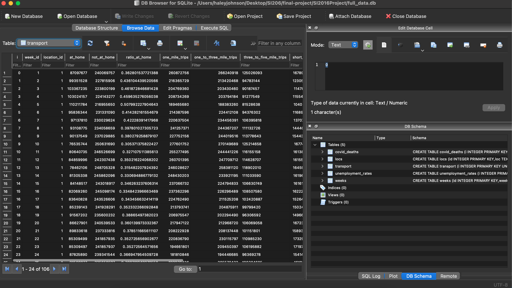
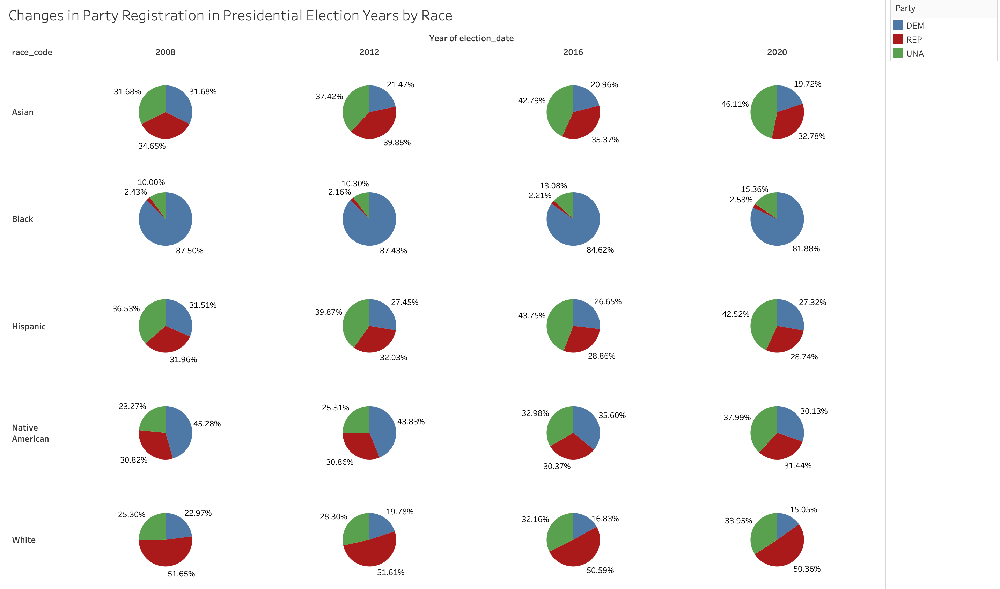

Projects
Language & Behavior for Large-Scale Breakthrough Lab
This semester I joined blablablab, which is objectively the reserach group with the coolest name at Michigan. I research how rhetorical frames impact engagement in Tweets about immigration and how the frames in quote tweets and replies differ from frames in the original tweet.
My research is a spin-off of this paper authored by the PhD student I work with and her advisors. We're aiming to publish our work in the spring of 2022.
I've done some of my best data visualization work on this project and can't wait to share it!
Skills Used: Python, R, Regex, Seaborn, Pandas, data visualization & transformation, designing regression models, project scoping, liteature review
COVID-19 Spread, Unemployment and Mobility Patterns
As a final project for my class SI 206, Data-Oriented Programming, I worked with two of my classmates to process data from APIs and web-scrapping into a database and combine them into visualizations. My group examined the relationship between COVID-19 cases, unemployment claims, and mobility patterns from March 2020 to March 2021.
In my group, I was responsible for collecting data from the Bureau of Transportation Statistic's API. I also built the database that contained all of the data we had collected.
She full project repo here.
Skills Used: Python, SQLite, REST APIs, data visualization, database design and normalization
visualizations from the project
database
The Michigan Daily
I joined The Michigan Daily on a whim freshman year and ended up managaging the paper's social media presence and newsletters from December 2020 to December 2021. Not really sure how that happened but I couldn't be happier.
To see my work in action follow us on Twitter (or our sports twitter if that's more your vibe), Facebook, Instagram and subscribe to our newsletters!
Skills Used: Adobe Photoshop, Facebook Creator Studio, Hootsuite (content managment system for Twitter), social media managment, project scoping


Bluebonnet Data Fellowship
During winter 2021 I was a volunteer data scientists with Bluebonnet Data, an organization that pairs people with technical skills with progressive campaigns and organizations.
I worked with New Rural Project to understand demographic trends and voter behavior in North Carolina's 9th Congressional District.
Skills Used: Python, Microsoft Excel, Tableau, data cleaning & transformation, collaborating on technical projects, working with non-technical clients
Changes in Party Registration by Race in Hoke County, North Carolina
Changes in Party Registration by Race in Moore County, North Carolina
Twitter Heuristic Analysis
Fall 2020 I took SI 110 "Introduction to Information Studies." As a class project I completed a heuristic analysis of Twitter using Nielsen's 10 Usability Heuristics.
I didn't know a ton about UX before taking this class, so this project was a great way to dive into usability and learn more about what it looks like in practice.
Skills Used: Adobe Photoshop, heuristic analysis, user research, product research